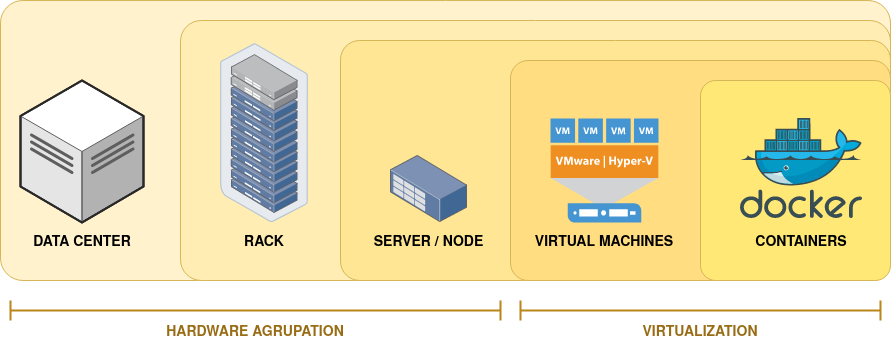

Apache Hadoop & Spark §
This may sound like a too old topic to make a post in 2020, but it is the first knowledge that I want to consolidate.
I could start this post like many others, talking about how much the world has changed in the last 20 years (since 2003), showing some cool diagrams about the data that nowadays is generated in a minute in the Internet and explaining how now _everything_, literally _everything_, is collecting data. I somehow hate this kind of talks because I think that they create the biggest possible hype and what comes after that is always someone selling a product. Of course there’s a lot of people living from selling technical solutions, but let’s try to make our analysis a bit more realistic.
2 sentences to define the current scenario:
The Global Data Sphere quantifies and analyses the amount of data created, captured, and replicated in any given year across the world. We are expecting it to hit 175 ZB (Zettabytes) by 2025.
Nowadays, most of this data is generated by people, so it is unstructured. But machines data, which is structured, is growing fast and we must expect that it will take over soon (by 2030).
This humongous amount of data requires new solutions to deal with it: how to store it and how to analyse it. Thankfully, in 2003 Google brought up a solution.
Big Data §
If you have read something about Big Data before you had probably heard about the 3 Vs (Volume, Variety, Velocity) that have became around 10. I don’t like this definition for Big Data because it makes it hard to identify what is a Big Data problem.
I think that a better approach is to define Big Data as a set of technologies and architectures for storing, moving, accessing and processing data, and so, a Big Data problem is one whose best solution involves these technologies.
Once that has been said, let’s get a little deep into the technology.
Distributed Computation §
Assumed that one server is not enough to store the data the solution seems obvious: we need more than one. So let’s start using clusters. If we make our servers (nodes in the future) cooperate quickly enough, we can increase our computing power by adding new nodes, in such a way that each node doesn’t need to be too powerful. To know what I am referring to when I talk about servers and nodes, we need to open a brief parenthesis here:
Virtualisation §
Before 2001 (first VMWare release) it was pretty common that one server was used to host just one application (and one Operating System). This imposes a fast growth of the datacenters, were almost all the CPU’s were around 90% of the time idle. Virtualisation rises as a technology to optimize how we were using hardware. It allow multiple computers to be host by the same server, sharing resources. Moore’s Law has been predicting how our computational power grow for the last 50 years, so servers have been duplicating its computational power every 18 months and now they can host hundreds of virtual machines. This implies that most of the _machines_ that we are using are virtual and are not associated to a physical server and that opened the doors for cloud computing (companies sharing computing infrastrucure). But because it is not far enough in time when one server hosted just one computer, now word ‘server’ is used to refer to one of the rack slots, and to one virtual machine. This should not cause any confusion as far as we have cleared this concepts.
{kind=link}
brief parenthesis closed
Hadoop §
Hadoop is an open-source software framework used for storing and processing Big Data in a distributed manner on large clusters of commodity hardware. It is licensed under the Apache v2 license and written in Java. It is based on Google’s GFS paper (published in 2003) so it has been develop in parallel (sometimes interwined) with virtualisation, and both have had a fast evolution.
Hadoop allow us to:
Store huge amount of data: It will be distributed in what is called a DataNode, that has blocks inside which size you can select. So the data will be divided in blocks of the selected size and then that’s blocks will go to usually many DataNodes, so the data is replicated.
Store a variety of data: Haddop (and its file system) do not have a pre-dumping schema validation so you can store structured, semi-structured or unstructured data with no complain.
Process data faster: Data will be processed on its own DataNode (processing is moved to the data) so it won’t travel anywhere before being processed, so every data block is processed in parallel (at the same time), and then the result is composed and sent as response.
{kind=link}